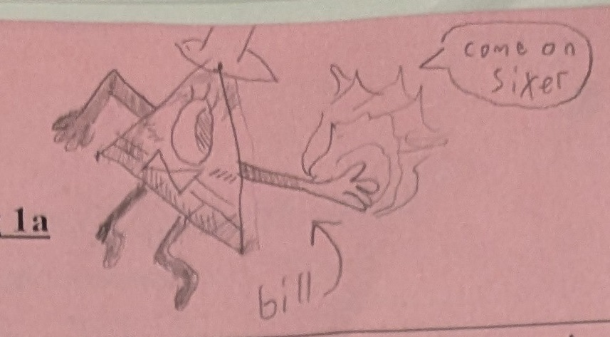

if you look at the left side of the paper there is a circle
under the circle there is a two "U" shaped lines
and under that is the first doodle of half
rating:4/10
at first I was trying to draw a cat or something like it but I added
a mouth that went in between its legs and lines on its front legs.
I never had a Name for Half but when i was drawing it on
paintTM I only drew half of the image and so when
i named the png file i named it Half. I just never changed the
Named of it so it stuck.
Bill Cipher's first appearce

descripion:
I'm unsure if this is the first Bill I drew but seems to be the first
if you are unaware of what media Bill Cypher is from Bill is from the disneyTM show Gravity Falls
Bill is simpliy a dream demon who appears only in dreams
he's holding out his hand because his main gimick is making deals with people where he does something for them and he gets to control their body in return (he doesn't menion the controling your body part)
he looks like the eye of providence because in Gravity Falls he met the founding fathers and asked them to put him on the dollar
Bill is saying "come on sixer" because in the book "The book of Bill" Bill gets block from entering a character call stanford's head because he found out bill was evil. He did this by puting a tin plate inside his head to prevent bill